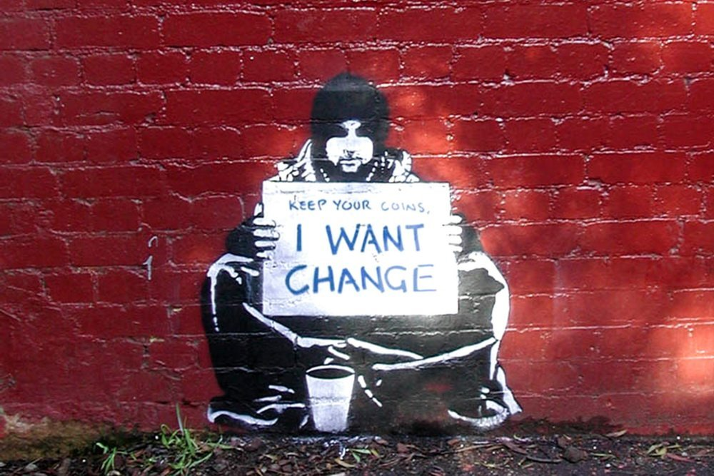

Why?
In Mandarin, there are many phrases for the word “why”. Besides simply asking “why”, the Chinese also uses, very commonly, “who gave you the permission? (凭什么?)” It was, in fact, almost impossible to perfectly encapsulate the meaning of this phrase in English, as it is composed of a multitude of meanings. Quite obviously, it questions the credibility of one’s actions and words, as well as its justification; simultaneously, however, it is also commonly used to point out the lack of logic in someone else’s arguments. For example, when the bureaucrats in Wuhan seized the PPE and masks the people donated to the Red Cross at the beginning of the COVID pandemic, leaving the medical personnel in nothing but a plastic bag acting as the only line of defense against the virus, the Chinese people asked this question collectively. If we take the question at face value, the merits of this question are lost, as we find that the answer is quite obvious: the bureaucrats themselves gave them the permission to seize the donations. However, there are more than that to the question. In this case, what the people is really asking is, “how can you do this? How is this fair? How, on any basis, can you justify these terrible actions? How, under any framework, can issues as absurd as this be really happening in front of our very eyes?” Such is the most valuable question, and perhaps the only valuable question, ever asked by any human alive.
The Chinese, and perhaps people all cross the world, have been seeking answer to this question since the creation of ancient society. Why, we ask ourselves, do people have to die? Why do some people get better stuff than others? Why do some people have to starve? Why do I have to work to get food, while that person in the fancy chair can just get all the food he wants? Why does the King get to rule over the entire nation, while we have to work as his subjects? Of course, according to the oppressive regime and the laws, the answers to these questions are rudimentary. However, the nature of these answers is either absurd, illogical, or unjustified; sometimes, it’s all three. Therefore, the people are unsatisfied with these answers. For the Chinese, this is especially true. Since the Xia dynasty, which existed over 5000 years ago, the Chinese society has perpetuated only one model: oppression. The contemporary Chinese satirical writer, Lu Xun, describes “a society of cannibalism (吃人).” In his famous short story, A Madman’s Diary, he famously stated “I read and studied the history books. The history is undated, instead, on every page of the book there scribbled ‘justice’ and ‘morality’. Through many studious nights, I finally found the words in between the scribbling: cannibalism.” To say that Lu Xun’s narration to be not far from reality would not be an exaggeration. Although, certainly, there were no real, widespread cannibalistic behaviour in China, even tracing back to the Xia Dynasty, the society was practically consuming its labourers.
To be born a worker in China was to be damned to a life of eternal damnation and hellscape, with no chance of ascending into heaven. The entire system, from political, to economical, to moral codes, are all geared against the workers and designed to keep them in check. The answer the ruling class provided for the question of “why?” asked by the Chinese people was quite simple, “it’s immoral to rebel against the system, despite its clear oppressiveness”. The philosophical and theocratic theories in China, one would find, largely consisted of not discovering the truth, but regulating one’s behaviour and attempting to shape the “perfect citizen”. Many philosophies, such as the popular Confucianism, largely consisted of ideas that stressed the importance of the obedience of the citizens to their parents, and more importantly, to the contemporary regime (hence why the philosophy was favoured greatly by governments globally even to this day). Such philosophies consisted the so-called “ancient Chinese culture”, which, as pointed out by Lu Xun, aims to forge nothing but a cannibalistic society which fuels on the suffering of the people. Some stress the merits of the “wisdom of our ancestors”, but to put it frankly, such wisdoms seem to be geared mostly towards creating a dystopian society in which humans are seen as nothing more than cattle. Hence, as people accept this type of culture and, consequently, the government’s answer to the question of “Why?”, they find themselves stuck in a perpetual loop of suffering, with no chance of escape.
Such an issue existed not only in ancient China, but in contemporary China as well. The blood-lineage theory during the Cultural Revolution is a great example. In order to justify their power, the bureaucrats made up a pseudo-scientific explanation as to why they should remain in power, instead of handing it democratically to the people. Similarly, Confucius’ philosophy is still largely promoted by the Chinese government to this day, as it is included in the education program in all primary schools and high schools. The workers in China, similar to ancient times, are also suffering. I cannot possibly comprehensively list all the issues with worker rights within China, but this figure should put it in retrospect: for an average Chinese worker to earn just an apartment in Shanghai, he has to work for twice the time of the recorded human history and more, with 12-hour workdays, and 7 days per week. All the while, bureaucrats and capitalists in China are richer than ever, as they benefit greatly from the surplus value generated by said philosophy. Somehow, with 95% of the population earning less than 1,000 Yuan monthly, the average salary in China is 22,000 Yuan. Such harsh conditions, combined with the non-stop brainwashing and propaganda of the Chinese government, forced the Chinese people to not consider their situation as they struggled to maintain their livelihood, and forced them to stop asking the question of “Why?”, or “凭什么?”, hence forcing them to accept the answer and philosophy of the ruling class. Societal progress in China, therefore, grinds to a halt.
Similar issues exist in other developing, and even developed countries. In America, for example, people have to pay tens of thousands just to afford insulin, a drug that only costs 10 dollars to manufacture. In Africa, companies such as Nestle steal water from the thirsty and starving children, then sell it back to them with an extremely high price. In France, the homeless are being scooped under the blanket and are not allowed to live in public spaces despite their lack of financial support by the government. In central Asia, children are forced to work 10 to 12 hours every day to support their family. In America, rail workers cannot go on strike because their president decided it’s bad for the economy. In Mexico, in Chile, in Canada, in the UK, in Spain, in Italy, in Germany, in Japan, in Korea, in Australia, all around the world people are suffering from injustice and wondering: why? Why is it that we have to be the ones that suffer? Why is it that we have to suffer? Why? When we have enough food to feed everyone, why is it that people still die of starvation? Why? When we have enough resources to ensure universal pay, why is it that people still die of overwork? Why? When we have advanced technology that can free people from labour, why is it that we still have to work 18 hours every day for our puny wage? Why? Why is it that, when we create all the values, our bosses, who does nothing, take most of it for himself? Why? Why is it that we, as the people who created the modern world, cannot enjoy the benefits of it? Why? Why?
These questions, of course, cannot be answered by the bureaucrats and capitalists. Their answers, once the workers actually have time to carefully consider it, will be shattered immediately due to its illogicality and lack of reasoning. The true reason that they cannot provide a comprehensive answer is because they cannot deny their own system. The reality is, so long as capitalism still rules over our world, its natural flaws deem a zero-sum game to be the theme of human society, in which people can only live happily if they profit off of the suffering of others. Therefore, in order to keep their happiness, the capitalists and bureaucrats must instill within the people the idea that their happiness, along with the people’s suffering, are justified. The only true way, therefore, for the people to be free from this oppression that lasted as long as humanity existed is to smash the old system and the old philosophy into pieces once and for all. Only when we truly deny the capitalists’ answer to our question of “why?”, can we genuinely work towards a better society, in which individual benefit and profit is not the core focus of humanity, but the betterment of humanity as a whole. Only when we realize that the central logic of the capitalist is completely flawed, can we truly begin to search for a solution of our issues and escape the perpetual cycle of suffering. And with this realization, the chains of the ruling class shall bound us no more, as the nature of their power is revealed to be completely unfounded and unjustified. We shall reclaim, as the creator of the modern society, the rightful ownership over it.
全世界无产者，联合起来！我们失去的只有锁链，但我们将获得整个世界！
-2022.12.12，Rothesay NB，Tony Su
Footnote: this turned out to be more of a meaningless gargle and ramble of my ideas regarding traditional culture in capitalist societies. I’m not really comfortable with using English in my heavily-opinionated political articles yet, but it is an attempt at something. I genuinely also struggled with the Chinese translation of stuff. There was indeed no English word for the Chinese phrase 凭什么. Anyways, hope you took something away from that.
Art Credit: Banksy
Click Me For Document Download as .docx File